Installation
To install bypackt please follow these steps:
> If you haven't already please install forge for minecraft 1.12.2 (You may need java for this)
> Under windows navigate to: "%APDATA%/.minecraft/mods" or on linux to: "~/.minecraft/mods"
> Place the "Bypackt.jar" you downloaded into this folder
> Open minecraft launcher and launch forge, in game press right shift to open the GUI
Functions
Here is a list of all functions in bypackt:
> Airjump - Lets you jump in the air
> Autoaim - Auto roate to the nearest target
> Autoarmor - Adds your armor automatically
> Autobreak - Break blocks automatically (Automine)
> Autojump - Jumps automatically
> Autoswim - Swims automatically for you
> Autototem - Adds your totems to offhand automatically
> Autowalk - Walks automatically
> Chams - Hilight entities through blocks
> Crystalaura - Beats your enemy with crystals
> Flight - Lets you fly around
> Gui - You can modify the clickgui look
> Hud - You can modify the hud overlay
> Killaura - Kills all entities around you
> Nofall - Take no fall damage
> Pvpbot - Find and kill entities automatically
> Scaffold - Bridge automatically for you (While walking)
> Sneak - Sneak automatically for you
> Sprint - Sprint automatically (While walking)
> Tabgui - Lets you quickly toggle mods
> Timer - You are faster as normal
> Trigger - Automatically attacks entities you are facing at
Support
Please report any problems on the issues page of our repro or on our discord
We will try to help/fix any issue as fast as we can (I need free time)
Reporting issues helps us to develop/make the client better and bug less
© 2021 - 2022 ZeroZipp - All Rights Reserved.
ZeroZipp